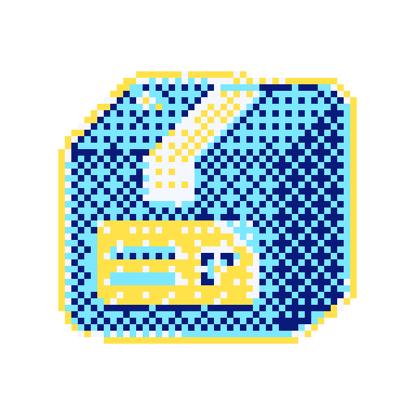

Halftone, hachura e dither
bayer8 · cell 4
floyd · cell 2
atkinson · cell 2
halftone · cell 9
hatch · cell 7

pixel-grid 64
Hachura ao vivo (shader)
WebGL indisponível neste navegador.
Período da linha:
5
px